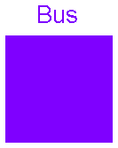

| Name | Description |
|---|---|
| MultiPort | Combined port of real and boolean signal |
| Signal bus |
 Modelica.Blocks.Examples.BusUsage.Interfaces.MultiPort
Modelica.Blocks.Examples.BusUsage.Interfaces.MultiPort

| Type | Name | Description |
|---|---|---|
| myRealSignal | ||
| myBooleanSignal |
connector MultiPort "Combined port of real and boolean signal" Real myRealSignal; Boolean myBooleanSignal; end MultiPort;
 Modelica.Blocks.Examples.BusUsage.Interfaces.Bus
Modelica.Blocks.Examples.BusUsage.Interfaces.Bus
Defines connector for signalbus.
| Type | Name | Description |
|---|---|---|
| realSignal1 | First Real signal (angular velocity) | |
| realSignal2 | Second Real signal | |
| integerSignal | Integer signal | |
| booleanSignal | Boolean signal | |
| multiSignal | Combined signal |
connector Bus "Signal bus"
import SI = Modelica.SIunits;
import Modelica.Blocks.Interfaces.*;
RealSignal realSignal1(redeclare type SignalType = SI.AngularVelocity)
"First Real signal (angular velocity)";
RealSignal realSignal2 "Second Real signal";
IntegerSignal integerSignal "Integer signal";
BooleanSignal booleanSignal "Boolean signal";
MultiPort multiSignal "Combined signal";
end Bus;